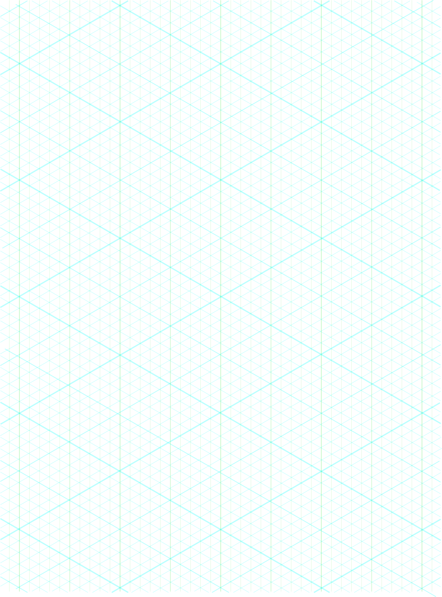
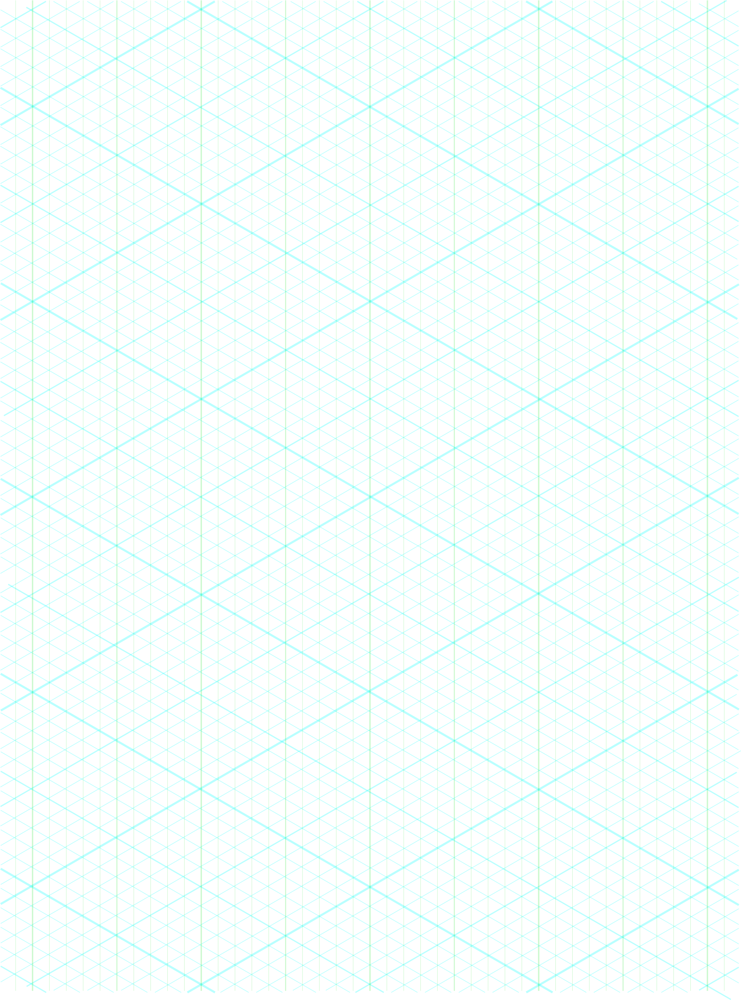
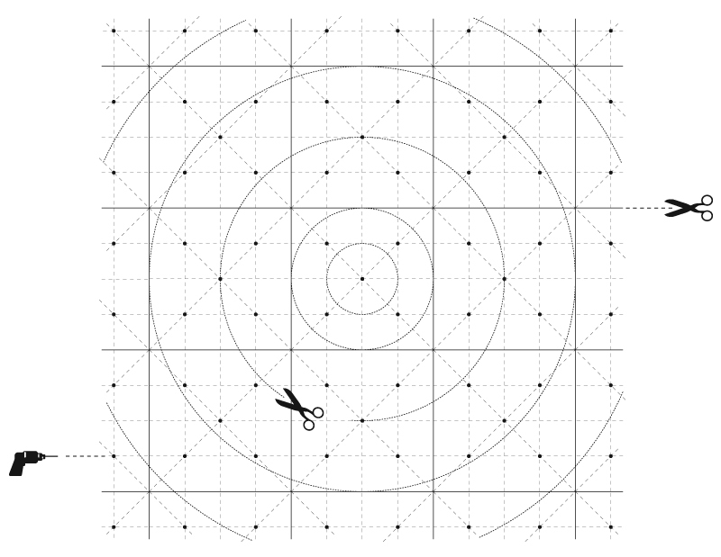

grids revision 1594


Problem
Creativity, design, and planning are more difficult without appropriate framing and collaboration can increase the difficulty of a project.
Approach
Standardization is one way to facilitate collaboration and benefit from the network effect. Replimat is designed to fit the interference pattern of the set of existing standards. Which is to say that we have chosen dimensions where the existing standards happen to agree or come close. This minimizes adjustment to local materials and ensures adaptability of each component in uncertain futures.
We have also developed a grid which we find useful to plan and document projects.
Other Grids
OpenStructures Grid

Masonite pegboard
History
''Pegboard was invented in 1897, and was created accidentally in a laboratory by Dr. Matthew Johnston in an effort to create a cure for Leprosy. Originally the material was intended to shield the leper from spreading the disease, but the substance was found to be useless for that purpose.'' http://en.wikipedia.org/wiki/Perforated_hardboard
Suppliers
*http://www.mcmaster.com/#pegboards
*http://www.mcmaster.com/#steel/=5tkfno
*http://www.mcmaster.com/#metal-perforated-sheets/=5tkg4z